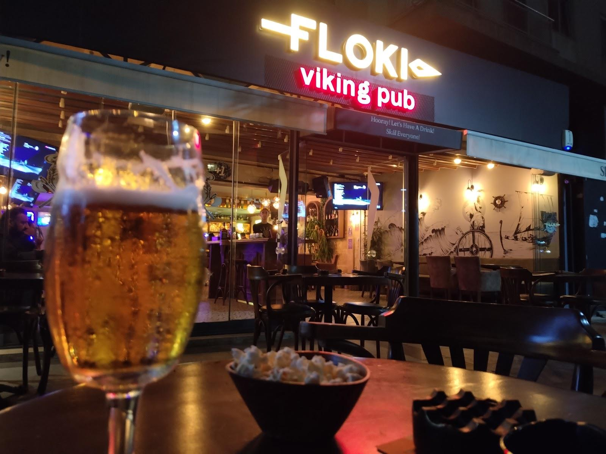

Floki Burger
Patates eşliğinde servis edilen burger.

AKBATI · VIKING PUB
Dostlarla bir masa.
Uzayan sohbetler, mutfaktan lezzetler.
MUTFAKTAN BİR SEÇKİ
Floki’nin paylaşımlarından
üç lezzet.
FLOKI’NİN İÇİNDEN
Viking teması, sıcak ışıklar.
Akbatı’da Floki’de buluşalım.
GOOGLE YORUMLARI
“Akbatı bölgesindeki en iyi pub.”
Umut Sağlam
Google yorumunu aç ↗“Çalışanları güler yüzlü. Yemekleri iyi bence.”
Tarık Paçacı
Google yorumunu aç ↗Google yorumlarından kısa alıntılar. Puan ve yorum sayısı kontrol tarihindeki kaydı yansıtır.
Güncel menü ve çalışma saatleri hakkında bilgi almak için bize ulaşabilirsiniz.